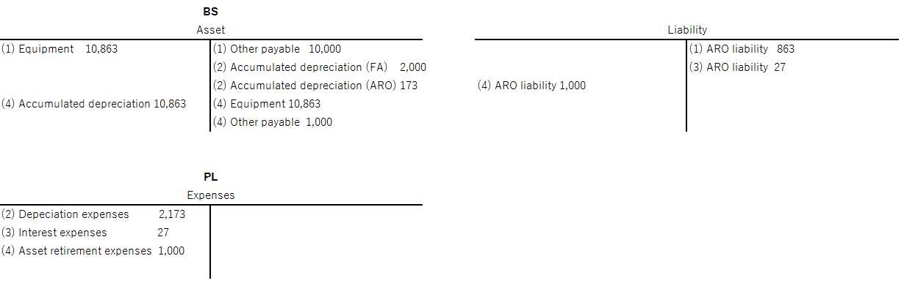

Set up asset retirement obligation for fixed assets for Japan
In Japan, asset retirement obligation (ARO) is recognized for fixed assets that have legal obligations at their retirement. This article explains how the ARO liability is recognized, amortized, and accrued, and how the fixed asset and ARO liability are retired.
Asset retirement obligation (ARO) is used to distribute the retirement cost of an asset to its service life. ARO is initially recognized as a liability when you acquire or construct a fixed asset. The ARO liability is equal to the present value of the estimated retirement cost for the asset at the beginning of its service life. When the ARO liability is added to the acquisition cost of the fixed asset, the ARO liability cost is amortized throughout the service life of the fixed asset. Interest expense on the ARO liability is accrued at the discount rate, so that the final ARO liability reaches the initially estimated retirement cost. When the fixed asset is retired, the payable due is accounted for in the ARO liability account. No more expenses are accounted unless there is a difference from the original estimate. The following table shows a real-world example of the life cycle.
| Item | Content |
|---|---|
| Assumptions | Acquisition cost: 10,000 (0 residual value) Useful life: 5 Depreciation method: Straight line Estimated cost of retirement: 1,000 Discount rate: 3% |
| Step 1 | Debit: Equipment 10,863 Credit: Other payable 10,000 Credit: ARO liability 863 |
| Step 2* | Debit: Depreciation expenses 2,173 Credit: Accumulated depreciation (FA) 2,000 Credit: Accumulated depreciation (ARO) 173 |
| Step 3* | Debit: Interest expenses 27 Credit: ARO liability 27 |
| Step 4 | Debit: Accumulated depreciation (FA) 10,000 Debit: Accumulated depreciation (ARO) 863 Credit: Equipment 10,863 Debit: ARO liability 1,000 Credit: Other payable 1,000 |
Note
* Steps 2 and 3 are repeated multiple times throughout the service life of the fixed asset.

Setup information
To use ARO, you must complete the following setup tasks:
- Set up basic fixed asset parameters, such as a default Book, reason codes, and number sequences on the Fixed assets parameters page
- Define a fixed asset group on the Fixed asset groups page
- Set up a fiscal calendar for depreciation
- Set up a discount rate schedule (cashflow discount rate) that uses current market discount rates to calculate ARO amounts
- Specify the type of ARO to use for an asset, and specify how often changes to the ARO amounts are posted
- Set up an estimated retirement cost plan for ARO, and simulate ARO amounts for each fiscal period of the asset’s service life
- Set up a posting profile for the Capitalized asset retirement obligation and Asset retirement obligation - accretion expense document types
- Set up accounts that the transaction amounts are retrieved from when you post a fixed asset that has a transaction type of ARO for disposal
Set up asset retirement obligation documents and enter ARO amount on a fixed asset
See Set up asset retirement obligation documents and enter ARO amount on a fixed asset.
Technical information for system administrators
If you don't have access to the pages that are used to complete this task, contact your system administrator and provide the information that is shown in the following table.
| Category | Prerequisite |
|---|---|
| Configuration keys | Ensure that the Fixed Assets configuration key is available under the Data Dictionary > Configuration Keys node in the Application Object Tree (AOT). |
| Security roles and duties | To perform this task, you must be a member of the -Maintain fixed assets- security role. |